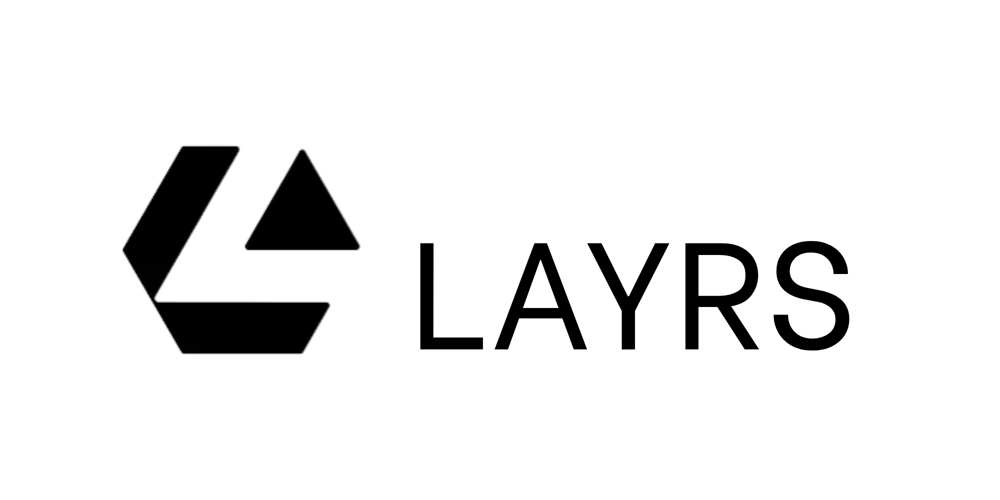
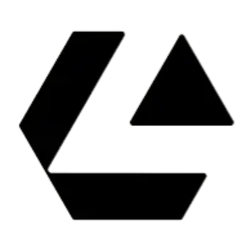

#FECB17
Accent. Fills, marker blocks, primary buttons.
Brand kit
Use the Layrs mark correctly.
Everything on this page is cleared for press, partners and integrators. Take the files as they are. If what you need is not here, ask before you improvise.
The mark


Clear space and minimum size
Keep free space around the mark equal to the height of its lower bar on every side — the dashed box shows it. Never place the mark closer than that to type, another logo, or the edge of a layout. Minimum size is 20 px tall on screen and 8 mm in print.
Colour
Horizen yellow is the brand’s only accent, and it is a fill. Ink is derived from Horizen navy so the two brands sit in one family.
#F0B400
Hover and pressed states only.
#0A0F1E
All body text, rules and the type on yellow.
#030E24
Dark-mode ground.
#F4F3EF
Warm neutral, biased toward the yellow.
#FFFFFF
Light-mode ground.
Semantic colour
Market outcome colour is separate from the accent and never doubles as decoration. The mark pair is colour-blind safe; the text pair meets WCAG AA on its own ground.
#0BA394Charts and fills.#E0553FCharts and fills.#0A6E5CLight ground.#B4342FLight ground.
Yellow is never text on a light ground.
Horizen yellow on white measures 1.53:1 — far below the 4.5:1 needed to read. Set type in ink on yellow instead, which measures 12.5:1. The same applies to icons and hairlines.
Yellow on white
Ink on yellow
Typography
Three faces, three jobs. Do not substitute without asking.
Public odds.
Zodiak
Display · headlines only
A sharp modern serif. Weights 400 and 700. Set tight, never below 24 px.
Trade what you know, tell no one.
Switzer
Body · UI and running text
Neo-grotesque. Weights 400, 500 and 700. The default for everything that is read.
63¢ · 0x8f3ad41c
JetBrains Mono
Data · prices, hashes, labels
Carries every number, address and uppercase micro-label. Weights 400 and 700.
All three ship with this kit as self-hosted web fonts. Layrs does not load fonts from a third party, and neither should an embed that carries our mark.
Usage
Do
- Use the supplied files unmodified.
- Use the reversed mark on dark grounds.
- Keep the clear space on all four sides.
- Call the protocol Layrs — one capital, no space.
- Link the mark to layrs.xyz when it is clickable.
Don’t
- Recolour, rotate, skew or add effects to the mark.
- Rebuild the wordmark in another typeface.
- Put the mark on a busy photo or a low-contrast fill.
- Write LAYRS, Layr, or Layrs Protocol Inc.
- Imply partnership or endorsement without written agreement.
Permission
The Layrs name and mark are trademarks of Layrs. You may use them to refer to Layrs in editorial coverage, documentation, integrations and conference material, provided you follow this page. You may not use them as your own product identity, in a logo of your own, or in a way that suggests we endorse you. For anything outside that, write to brand@layrs.xyz.